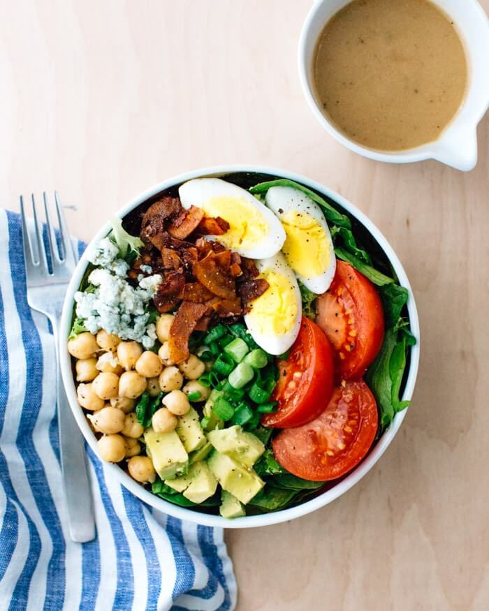

Vegetarian Cobb Salad

Description
This tasty vegetarian Cobb salad is a delicious healthy dinner recipe for Meatless Monday, featuring chickpeas and coconut bacon.
Ingredients
For the vinaigrette
- 4 tablespoons red wine vinegar
- 6 tablespoons olive oil
- 1.5 tablespoons Dijon mustard
- 1 teaspoon honey
- 0.25 teaspoons kosher salt
- Fresh-ground pepper
For the Cobb Salad
- 0.5 cups coconut bacon
- 4 hard boiled eggs
- 15-ounce can chickpeas
- 1 tablespoon olive oil
- 0.5 teaspoons kosher salt
- 1 head romaine lettuce
- 1 head Bibb lettuce
- 2 ripe tomatoes
- 3 green onions
- 1 avocado
- 1 ounce blue cheese crumbles
Instructions
- In a small bowl, vigorously whisk together the red wine vinegar, olive oil, Dijon mustard, honey, Worcestershire sauce, kosher salt, and freshly ground pepper until a creamy emulsion forms.
- Make the coconut bacon.
- Make the hard boiled eggs according to the Perfect Hard Boiled Eggs, Steamed Hard Boiled Eggs or Instant Pot Hard Boiled Eggs methods.
- Drain and rinse the chickpeas; in a small bowl, mix them together with 1 tablespoon olive oil and 0.5 teaspoons kosher salt.
- Wash the lettuce and chop it into bite-sized pieces. Slice the tomatoes. Thinly slice the green onions. Chop the avocado. Slice the eggs into wedges.
- To serve, place greens on a plate or in a bowl. Top with eggs, tomatoes, onions, avocado, chickpeas, blue cheese, and coconut bacon. Drizzle with dressing and serve.